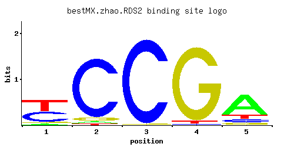

RDS2
YPL133C
Zinc cluster transcriptional activator involved in conferring resistance to ketoconazole
Best-performing DNA-binding model.

View and copy the recommended matrices ↘
A | 0.052 0.024 0.001 0.001 0.689 C | 0.438 0.904 0.982 0.014 0.107 G | 0.054 0.051 0.016 0.953 0.079 T | 0.456 0.021 0.001 0.032 0.125
A | 5 2 0 0 68 C | 43 90 98 1 10 G | 5 5 1 95 7 T | 45 2 0 3 12
A | -1.82 -2.59 -5.77 -5.77 0.77 C | 0.89 1.61 1.70 -2.55 -0.52 G | -1.20 -1.26 -2.42 1.67 -0.82 T | 0.35 -2.72 -5.77 -2.30 -0.94
Alternative candidate matrices 2
Historical matrix candidates from the original ScerTF database. Expand a source to inspect its original logo, scores, and matrix values.
RDS2Badis et. al.P = 0.1027View matrix ↘
RDS2Zhu et. al.P = 0.02804View matrix ↘
Gene-level annotations and interactions.
Genes bound in ChIP-chip experiments 1 genes
No Data
Genes affected by TF deletion 158 genes
YCR040W, YGR280C, YKR012C, YOR225W, YDL131W, YFR032C-A, YGL009C, YHR143W, YMR194W, YPL049C, YBR031W, YGR279C, YKR042W, YKR013W, YMR044W, YOR226C, YDL061C, YHR143W-A, YJL052W, YOR382W, YHR053C, YHR025W, YIR034C, YLR374C, YMR071C, YNL147W, YNL149C, YOR347C, YOR351C, YPL187W, YHR208W, YOR159C, YBR091C, YDR461W, YHR021C, YJR117W, YLR339C, YNL110C, YNL146W, YBL026W, YCL012W, YCL018W, YDL191W, YDR281C, YIL015W, YLR185W, YML055W, YDR378C, YJR094W-A, YLR287C-A, YNL030W, YPL247C, YDL133C-A, YDL136W, YLR439W, YMR230W, YOR045W, YBR009C, YDR077W, YER154W, YNL027W, YAL012W, YDL075W, YEL021W, YGR037C, YLR348C, YOL144W, YOR293W, YOR357C, YKL209C, YKL178C, YMR260C, YBR105C, YDR475C, YLR343W, YLR349W, YMR081C, YNL150W, YOL143C, YIL027C, YKL177W, YDR086C, YER131W, YHR010W, YKR057W, YLR234W, YNL065W, YOR239W, YHR190W, YLR040C, YLR420W, YNL259C, YOR393W, YCL066W, YDR447C, YHR005C-A, YML126C, YOR210W, YDL081C, YKL120W, YLR041W, YLR043C, YOR020C, YOR084W, YCR097W, YFL026W, YHR072W-A, YKL030W, YLR388W, YOL126C, YPR062W, YDR322C-A, YGL089C, YGL121C, YGL093W, YBR145W, YKL029C, YNL162W, YPL281C, YDL239C, YJR004C, YKL216W, YKL156W, YNR044W, YNL322C, YDR056C, YLR303W, YOR247W, YAL033W, YER019C-A, YGL031C, YGR148C, YHR136C, YHR141C, YBR053C, YCR028C-A, YLR302C, YNL070W, YOR248W, YGL032C, YGR118W, YLR051C, YLR421C, YFL037W, YJR135W-A, YLR332W, YDL184C, YJR009C, YKL164C, YLR180W, YML108W, YDR485C, YBL018C, YGR209C, YML081C-A, YOR182C, YPL133C, YPR176C
Predicted TF–TF partners 5 genes
GIS1, RGM1, STB4, STB5, USV1